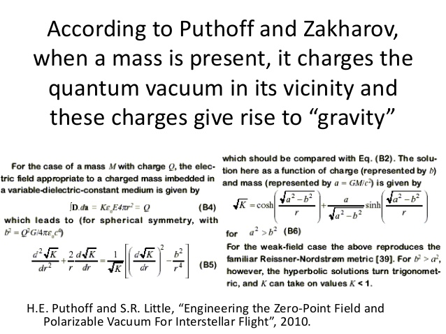
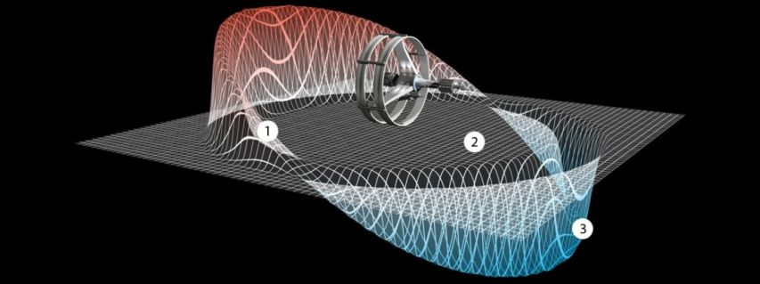
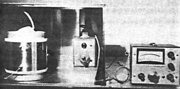
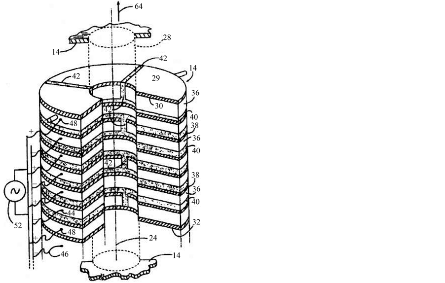
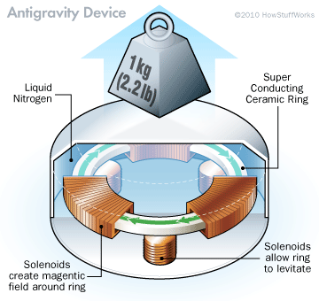

This multi-part post is devoted to the issue of travelling between the stars within the lifetime of a human. It does not necessarily mean that the propulsion method would be so fast as to exceed the speed of light, though that possibility does exist. It simply is a discussion on how the great gulfs between the stars can be traversed using contemporaneous human technology. As such, it purposely omits dimensional gates and transport portals. I most certainly do not have the answers regarding this most interesting of subjects. This post discusses this issue because one of the first things a debunker does is complain that engineering solutions are unattainable. I discuss these issues and more. It is a good read.
The sections
This is part 2 of a four part post. This post consists of four sections as described;
- Part 1 – Introduction to FTL technology
- Part 2 – The Techniques – You are here.
- Part 3 – Other FTL alternatives
- Part 4 – Conclusion and Summary
Some basics
(This section is a review of the introduction from the first section.)
First off, MAJestic as well as our benefactors have techniques and mechanisms that permit geographical travel anywhere in the universe without using a vehicle. This technology also enables such things as world-line travel, dimensional travel, and time travel.
This is a very powerful technology, but is not the subject at hand. Here, we will talk about technologies that can be used to traverse large physical distances in relatively short periods of time, without using dimensional portals or gates.
The benefit in this technology is obvious. You need to physically go to a location in order to establish “jump gate” coordinates for it. This will require physical presence, and that means physical travel. (Of course, there are other things that one can do, like trial by error, robots and probes, but please follow my train of thought on this.)
Here we discuss ways to travel “very fast” in our universe, by using existing and known technologies without using a dimensional portal or gate.
The Techniques
“If gravity modification is real, it will alter the entire aerospace business.” -Gravity Research for Advanced Space Propulsion” (GRASP), Boeing 2012
The following are some of the areas of pursuit that engineers might want to investigate towards obtaining FTL flight ability. I compiled this list in 2014, and periodically updated it subsequently. It is provided here as avenues of investigation only. This list is in no way complete, but is merely suggestive of avenues of investigation.
I do recognize that many extraterrestrial species in our solar system have mastered space flight (among other things) and that they assist MAJestic in transporting personnel within our solar system. I also understand that we are busy developing our own home-grown versions of these vehicles through the study of loaned craft. But that should not simply suffice. We need to pursue our own designs, and our own investigations independent of extraterrestrial influence. To that end, I make and posit my suggestions herein.
In general, there are two basic techniques.
There are numerous avenues to pursue, not only the two listed here. The avenue to investigate, like anything else, will depend on political pressures, funding, the individuals involved, the social-economic situation, and (perhaps) a little luck.
The first [1] involves moving space-time boundaries. Such is the propulsive techniques that have made news in the last few years.
The second [2] involves a reduction in the effect of gravity. If one can control gravity, they can create nearly inertia less vehicles and technologies of great efficiency, yet that work within our space-time envelope. Currently advanced American aircraft such as the B-2 use technologies based on this principle. These are the electrogravitic principles based on the Biefeld-Brown Effect. (The Biefeld-Brown Effect is based on the research of Thomas Townsend Brown who in 1928 gained a patent for his practical application of how high voltage electrostatic charges can reduce the weight of objects.)
Robert Lazar claimed that gravity propagates instantaneously. If one thinks about that, it actually makes perfect sense logically. Gravity warps or bends space and time. We measure the speed or velocity of an object by observing the distance that the object travels in a given time interval. If the very parameters that we use to measure distance and time are significantly affected by strong gravitational fields, then it would be impossible to actually define a finite speed to the propagation of gravity. A recent article, “Rethinking Relativity,” had stated that Associate Professor Tom Van Flandern from the University of Maryland issued a document, “The Speed of Gravity - What the Experiments Say,” demonstrating that gravity propagated at least 20 billion times faster than light and may very well propagate instantaneously.
Let’s just play around with some potential possibilities…
The SMART Drive
The SHARP Drive is the fictional drive that propels his third millennia spaceships across the immense distances between stars. Writer Arthur C. Clarke coined the terms SHARP from the initial letters of the four physicists who he jointly credits with originating the concepts and discoveries that make the drive possible Sakharov, Haisch, Alfonso Rueda, and Hal Puthoff.
The concept is named after the dreamers whom inspired it.
Andrei Sakharov is the distinguished Russian physicist who first suggested that space is not empty but is full of energy, the so-called ‘ zero-point field ‘. This suggestion was taken up by astrophysicist Bernhard Haisch of Lockheed’s Research Laboratories and physicists Alfonso Rueda, a professor at California State University at Long Beach, and Harold Puthoff of the Institute for Advanced Studies in Austin
Their article ‘Inertia as a Zero-Point Field Lorentz Force’ appeared in the February 1, 1994 issue of the eminent journal Physical Review A, and it offered a radically new interpretation of the origin of the strange quality of inertia.

This new concept of inertia also points to a new understanding of gravity, since gravity and inertia are inextricably intertwined. Hal Putoff goes even further. Pointing to recent success in manipulating atomic processes by controlling zero-point fields in the lab, Puthoff says;
"…If we are right that both gravity and inertia stem from the zero-point field, then someday we might be able to manipulate both." -Hal Putoff
The Alcubierre Drive
In 1994 Miguel Alcubierre, a theoretical physicist at the University of Wales published a paper called “The Warp Drive: Hyper-Fast Travel Within General Relativity.” This should be well known to anyone reading this manuscript. If not… I would seriously reconsider the pedigree of these who is considering this manuscript.
M. Alcubierre, Class. Quantum Grav. 11, L73 (1994); see also I.A. Crawford, Q. J. R. Astron. Soc. 36, 205 (1995).
Alcubierre showed it is theoretically possible to distort space to allow warp speed travel: to literally expand the volume of space-time behind a starship, while compressing it up ahead — like feeding a tent pole through its sleeve by bunching up the fabric ahead, and pulling it along behind. Alcubierre showed that space-time could be similarly manipulated. The position of a starship within such a distortion would change, relative to its destination – yet the ship itself need not actually “move” at all.
Miguel Alcubierre. The Warp drive: Hyperfast travel within general relativity. Class. Quant. Grav., 11:L73–L77, 1994.
What was so spectacularly different was that Alcubierre realized that one needs to take into account the possibility of engineered dynamic space-times within the context of general relativity.
Specifically, Alcubierre showed by example that by distorting the local space-time metric in the region of a spaceship in a certain prescribed way, it would be possible to achieve motion faster than the speed of light. (As seen by observers outside the disturbed region, without violating the local velocity-of-light constraint within the region.)
Furthermore, the Alcubierre solution shows that the proper acceleration along the spaceship’s path would be zero and the spaceship would suffer no time dilation. This is of great importance due to the great distances between the vast gulfs of space between the stars.

When one combines the technologies associated with the Alcubierre Drive and that of a possible variable speed of light; a very favorable solution presents itself towards travel beyond apparent light speed.
Therefore, the proper conclusion to be drawn by consideration of engineered metric/vacuum-energy effects is that, with sufficient technological means to appear “magic” at present (to use Arthur C. Clarke’s phrase characterizing a highly advanced, technological civilization), travel at speeds exceeding the conventional velocity of light could occur without the violation of fundamental physical laws.
And, we might add, this could in principle be done without recourse to concepts as extreme as wormhole traversal. (However, clearly, exotic matter/field states, e.g., macroscopic Casimir-like negative-energy-density vacuum states, would be required.)
See A. Einstein, Ann. Phys. 35, 898 (191 1); K. Scharnhorst, Phys. Lett. B 236, 354 (1990); P. Wesson, Space Sci. Rev. 59, 365 (1992); A.M. Volkov, A.A. Izmest'ev, and G.V. Skrotskii, Sov. Phys. JETP 32, 686 (1971); T. D. Lee, Particle Physics and Introduction to Field Theory (Harwood Academic, London, 1988), p. 826; M. Morris, K. Thorne, and U. Yurtsever, Phys. Rev. Lett. 61, 1446 (1988).
As a result, the possibility of reduced-time interstellar travel, either by advanced extraterrestrial civilizations at present or ourselves in the future, is not fundamentally constrained by physical principles.
The key to Alcubierre’s warp drive is something called exotic matter.
Exotic matter has the curious property of having a negative energy density, unlike normal matter (the stuff that makes up people, planets and stars), which has a positive energy density. Two bits of matter that have the same energy density are attracted to each other by gravity.
In contrast, bits of positive and negative energy matter would be repelled by gravity. It is the negative energy density of exotic matter that powers the warp drive.
A negative energy density is not the nonsensical thing it appears to be. Indeed, in 1948 the Dutch physicist Hendrik Casimir first predicted that one could observe the effects of negative energy densities. He reasoned that if negative energy densities existed, two closely spaced parallel conducting plates in a vacuum would be attracted to one another.
This phenomenon, now called the Casimir effect, was measured in 1958 by M. Sparnaay, and is usually taken to be a confirmation that negative energy densities are possible.
Exotic matter of a slightly different type is also invoked in the modern theory of cosmology known as inflation.
According to the theory of inflation, exotic matter in the early universe (moments after the big bang) had a positive energy density, but a very large negative pressure. The negative pressure was so large that it counteracted the effects of the positive energy density. The result was an expansion of space-time so rapid that two observers originally very close to each other would be carried apart faster than the speed of light.
This was all ground breaking, but not really practical. That was, until other physicists began to look at the equations.
"I suddenly realized that if you made the thickness of the negative vacuum energy ring larger — like shifting from a belt shape to a donut shape — and oscillate the warp bubble, you can greatly reduce the energy required — perhaps making the idea plausible." -physicist Harold White
White had adjusted the shape of Alcubierre’s ring which surrounded the spheroid from something that was a flat halo to something that was thicker and curvier.
Harold White presented the results of his Alcubierre Drive rethink a year later at the 100 Year Starship conference in Atlanta where he highlighted his new optimization approaches — a new design that could significantly reduce the amount of exotic matter required. And in fact, White says that the warp drive could be powered by a mass that’s even less than that of the Voyager 1 spacecraft.
That’s a significant change in calculations to say the least.
The reduction in mass from a Jupiter-sized planet to an object that weighs a mere 1,600 pounds has completely reset White’s sense of plausibility — and NASA’s.
Oscillation Thrusters & Gyroscopic Antigravity
Mechanical devices are often claimed to produce net external thrust using just the motion of internal components. These devices fall into two categories, [1] oscillation thrusters and [2] gyroscopic devices.
Their appearance of creating net thrust is attributable to misinterpretations of normal mechanical effects. The following short explanations were excerpted and edited from a NASA website about commonly submitted erroneous breakthroughs.
[1] Oscillation Thruster
Oscillation thrusters move a system of internal masses through a cycle where the motion in one direction is quicker than in the return direction.
When the masses are accelerated quickly, the device has enough reaction force to overcome the friction of the floor and the device slides. When the internal masses return slowly in the other direction, the reaction forces are not sufficient to overcome the friction and the device does not move.
The net effect is that the device moves in one direction across a frictional surface. In a frictionless environment the system’s components would simply oscillate around their center of mass.
[2] Gyroscopic Thruster
A gyroscopic thruster consists of a system of gyroscopes connected to a central body. When the central body is torqued, the gyros move in a way that appears to defy gravity. Actually the motion is due to gyroscopic precession and the forces are torques around the axes of the gyros’ mounts. There is no net thrust created by the system.
To keep an open, yet rigorous, mind to the possibility that there has been some overlooked physical phenomena with such devices, it would be necessary to explicitly address all the conventional objections and pass at least a pendulum test.
Any test results would have to be impartial and rigorously address all possible false-positive conclusions.
There has not yet been any viable theory or experiment that reliably demonstrates that a genuine, external, net thrust can be obtained with one of these devices. If such tests are ever produced, and if a genuine new effect is found, then science will have to be revised, because it would then appear that such devices are violating conservation of momentum.
Hooper Antigravity Coils
Experiments were conducted to test assertions from US Patent 3,610,971, by W. J. Hooper that self-canceling electromagnetic coils can reduce the weight of objects placed underneath.

“Dr. late William J. Hooper, BA, MA, PhD in Physics was affiliated with the University of California at Berkley, and was Professor Emeritus, when he died in 1971. His works are documented and he gained two U.S. patents for his "ALL-ELECTRIC MOTIONAL FIELD GENERATOR". He claimed use of the "Motional Electric Field" to produce gravity and anti-gravity for use in SPACECRAFT and AIRCRAFT. Indeed, in U.S. patent #3,610,971 you can see a Flying Saucer diagram is used as an example in Figure 7.” - James Hartman, CaluNET Future Science Administrator
Related Documents
- US Patent #3,610,971. “All Electric Motional Electric Field Generator”, Awarded to William Hooper, April 1969
- US Patent # 3,656,013. “Apparatus for Generating Motional Electric Field”, Awarded to William Hooper, April 1972
- Hooper, W. J. (1974). New Horizons in Electric, Magnetic and Gravitational Field Theory, Electrodynamic Gravity, Inc. 1969
- Frances G. Gibson, “THE ALL-ELECTRIC FIELD GENERATOR AND ITS POTENTIAL”, Electrodynamic Gravity, Inc., 1983
- “Electric Propulsion Study”, Dr. Dennis Cravens, SAIC Corp, prepared for USAF Astronautics Lab at Edwards AFB, August 1990 — Section 3.7 Non-Inductive Coils
Summary
During the late 60’s William J. Hooper put forth an interesting theory involving the v x B terms dynamic electrical circuits. There was and is uncertainty as to the exact physical understanding of the Biot-Savart-Lorentz law and Ampere’s law involving the set of reaction forces. Peter Graneau has studied these expressions. Hoopers view was that there are three different types of electric fields due to the distribution of electric field, and two due to induction.
At the heart of the issue is the connection of the magnetic field and its source in the charged particles. EM theory is presently consistent with the idea that spinning magnetic dipoles create effects indistinguishable from charged particles.
There has been no critical experiment which can disprove whether a magnetic flux rotates with its source.
If it does co-move with its source then it is logical to assume that a motional electric field in a fixed reference frame of the current induces a magnetic field. This concept is likewise consistent with a field-free interpretation such as Ampere’s original laws.(with 4 pages more about Hooper’s theories)
FREE FALL OF ELEMENTARY PARTICLES: ON MOVING BODIES AND THEIR ELECTROMAGNETIC FORCES, by Nils Rognerud 1994 (nils@ccnet.com) (available at the elektromagnum web site)
This paper is a review of the problem of the observable action of gravitational forces on charged particles. The author discusses the induced electric fields and the sometimes overlooked unique physical properties. He analyzes several experiments, showing the reality of the induced electric fields.
The current interpretation, based on the idea of only one electric field, with certain characteristics, is compared with alternative approaches.
The Hooper Coil: The author has tested a setup by pulsing strong currents, opposite and equal, through multiple parallel conductors.
The configuration of the conductors in this type of experiment will cancel the B-fields, while still producing an Em field, in accordance with Eq. 4.2. This is similar to an experiment by Hooper (W. J. Hooper), who successfully predicted and measured the motional electric field – all in zero resultant B-field.
Interestingly, all of the above experiments can influence an electron with a zero B-field, in the region of the electron.
This has some profound implications – one of which is that the motional electric force field is immune to electrostatic or magnetic shielding.
Experimentally, it can be confirmed that the motional electric field is immune to shielding and follows the boundary conditions of the magnetic (not electric) field. The only way to shield a motional electric field is to use a magnetic shield around the source of the magnetic flux – containing it at the source.
These effects are not startling if one remembers that the motional electric field is a magnetic effect and that a magnetic field has a different boundary condition than the electric field.
The Investigation
This was investigated by NASA and discounted with no further studies ever attempted.
The “official explanation” is that no weight changes were observed within the detectability of the instrumentation.
Officially, it is believed that Hooper may have misinterpreted thermal effects as his “Motional Field” effects.
EXPERIMENTAL RESULTS OF HOOPER’S GRAVITY-ELECTROMAGNETIC COUPLING CONCEPT
National Aeronautics and Space Administration. Lewis Research Center, Cleveland, OH. MILLIS, MARC G. WILLIAMSON, GARY SCOTT JUN. 1995 12 PAGES Presented at the 31st Joint Propulsion Conference and Exhibit, San Diego CA, 10-12 Jul. 1995; sponsored by AIAA, ASME, SAE, and ASEE NASA-TM-106963 E-9719 NAS 1.15:106963 AIAA PAPER 95-2601 Avail: CASI HC A03/MF A01
Experiments were conducted to test assertions from Patent 3,610,971, by W.J. Hooper that self-canceling electromagnetic coils can reduce the weight of objects placed underneath.
No weight changes were observed within the detectability of the instrumentation.
More careful examination of the patent and other reports from Hooper led to the conclusion that Hooper may have misinterpreted thermal effects as his ‘Motional Field’ effects. There is a possibility that the claimed effects are below the detection thresholds of the instrumentation used for these tests. CASI Accession Number: N95-28893.
Investigational Fraud
I have two problems with the methodology used by the NASA scientists in the above experiment.
Firstly [1] The amount of ampere-turns used in the NASA experiment was substantially lower than the amount used by Hooper.
Their experiment did not try to replicate his results.
They did not even attempt to find out why the results were different. Hooper found that his effect increased in proportion the square of the current. If you were motivated to verify that the Hooper effect exists, would you not try to conduct the experiment with MORE current, rather than less?
Secondly [2], NASA conducted it’s tests by energizing the coils and making measurements in an immediate on-off mode, rather than letting things run for a while as Hooper did. NASA’s reason for doing this was to avoid errors due to thermal effects. (They did not follow the advised protocol as provided for in the patent.)
It makes sense for the researchers to do this, however what does not make sense is that if you are trying to verify an original experiment and you make changes, you have an obligation to also conduct the experiment in it’s original mode. To do otherwise is bad science.
But what could be wrong with testing things in an immediate on-off mode? Well, it can be seen in other experiments that a gravitational effect sometimes results from macroscopic spin alignment of the quantum angular momentum of a large number of microscopic particles. It has been demonstrated in other experiments that it takes time for these particles to come into alignment. For example in the inventions of Henry Wallace it sometimes took minutes for the “kinemassic” gravito- magnetic field to fully manifest itself.
The reason that it takes time for particles to come into alignment, could be much the same reason that it takes time to permanently magnetize a magnet. Wallace found that the “kinemassic” effect occurs with elemental materials which have a component of unpaired spin in the atomic nucleus. This includes all common isotopes of copper, which of course is the material used in Hooper’s coils.
Conclusion
I remain skeptical.
That is because, the moment that something looks to be of value by MAJestic, or the Military, or the United States government, it is quickly disparaged and the research thrown into a SAP program.
So when a theory is tested, only once, and then quickly discounted, it becomes suggestive of this kind of process.
I strongly urge the reader to revisit this issue. I strongly suspect that this kind of technology, or ones related to it is already incorporated in a number of highly classified aerospace aircraft designs. I believe that this NASA report is specifically designed to thwart research along these avenues.
Millis, M. & Williamson. 1995. Experimental Results of Hooper’s Gravity-Electromagnetic Coupling Concept. NASA TM-106963.
Schlicher Thrusting Antenna
“Experiments were conducted to test the claims by Rex L. Schlicher et.al. (Patent 5,142,861) that a certain antenna geometry produces thrust greatly exceeding radiation reaction, when driven by repetitive, fast rise and relatively slower decay current pulses. “
Tests of a specially terminated coax, that was claimed to create more thrust than attributable to photon radiation pressure, revealed that no such thrust was present. Again, NASA found no benefit in further investigations of this matter.

Fralick G. & Niedra. 2001. Experimental Results of Schlicher’s Thrusting Antenna. AIAA-2001-3657. (NASA TM-2001-211207) “We conclude, in agreement with the momentum theorem of classical electromagnetic theory, that any thrust produced is far below practically useful levels. Hence within classical electrodynamics, there is little hope of detecting any low level motion that cannot be explained by interactions with surrounding structural steel and the Earth's magnetic field.”
The testing showed agreement with classical theory, and no further tests or studies were planned.
The scientists have spoken!
However, they ended the report with the most signifigant statement that they could have made:
“The simplicity and import of the electromagnetic momentum theorem underscore the hopelessness of any space reaction scheme strictly within classical electrodynamics. This severe bottom line strongly suggests that for practical, globally fast mass/energy transport, one must work around the classical limitations of momentum conservation by digging into the deeper layers of spacetime structure itself---the so called "spacetime engineering". “
Podkletnov Gravity Shield
“The trouble started when Robert Matthews, science correspondent to the British Sunday Telegraph, got hold of the story. Matthews, like any journalist, relies on contacts, and he's disarmingly honest about it. "You don't get stories by digging for them," he now says with a laugh. "This isn't like Sherlock Holmes, that's a lot of bollocks. It's like, you hope a little brown envelope turns up in the post, and if it does, you're in luck." “In his case the little brown envelope contained page proofs of Podkletnov's paper, leaked by a man named Ian Sample who worked on the editorial staff of the Journal of Physics-D. Although Podkletnov's paper hadn't been published yet, Sample and Matthews decided to break the story in the Sunday Telegraph, which printed it on September 1, 1996. The first sentence was key: "Scientists in Finland are about to reveal details of the world's first antigravity device." “Antigravity? Podkletnov never used that word; he said he'd found a way to block gravity. Maybe this seemed a trivial distinction, but not to the staid professors at the Institute of Materials Science in the University of Tampere, to whom "antigravity" sounded like something out of a bad Hollywood movie.” -Breaking the Law of Gravity By Charles Platt. Wired Magazine.
A controversial claim of “gravity shielding” using rotating superconductors and radio-frequency radiation was published based on work done at Finland’s Tampere Institute. (i.e. an object placed above this spinning disc would lose weight.)
Podkletnov E. & Nieminen. 1992. A Possibility of Gravitational Force Shielding by Bulk YBCO Superconductor. Physica C. 203: 441-444.
A privately funded replication of the Podkletnov configuration “found no evidence of a gravity-like force to the limits of the apparatus sensitivity,” where the sensitivity was “50 times better than that available to Podkletnov.”
Hathaway, Cleveland, & Bao. 2003. Gravity modification experiment using a rotating superconducting disk and radio frequency fields. Physica C. 385: 488-500.
But this information is completely unfounded and meaningless. Boeing Aerospace is actively developing this technology and is doing everything in it’s power to retain Mr. Podkletnov and his work .

See below.
Publicly available papers describe this technology as having potential, but needing further engineering research and studies. Just as the exact details of impulse gravity beam propelled spacecraft cannot yet be determined with existing information, there are many unknowns in what the exact characteristics of a mature impulse gravity beamed propulsion transmitter design will be. Existing impulse gravity generator technology only generates the impulse gravity beam for a very short period of time, on the order of 10-4 seconds. For a practical propulsion system, the transmitter will need to greatly increase the amount of time it provides propulsion to the target spacecraft. This increase might be achieved with the development of an impulse gravity generator that is able to operate in a steady state condition. If such a generator cannot be built, then pulsing one or more generators at a high frequency could still achieve a high average acceleration of the target spacecraft, even though each individual pulse may be of short duration.
Similar lessons related to Honda’s research into the Biefeld-Brown effect applies to the Finnish/Russian Dr. Podkletnov’s gravity shielding spinning superconducting ceramic disc experiment.
It took many years reading and rereading Dr. Podkletnov’s two papers (the 1992 “A Possibility of Gravitational Force Shielding by Bulk YBa2Cu3O7-x Superconductor” and the 1997 “Weak gravitational shielding properties of composite bulk YBa2Cu3O7-x superconductor below 70K under e.m. field”) before I fully understood all the salient observations.
Any theory on Dr. Podkletnov’s experiments must explain four observations;[1] the stationary disc weight loss, [2] spinning disc weight loss, [3] weight loss increase along a radial distance and [4] weight increase.
The pure fact is that we haven’t see anyone else attempt to explain all four observation within the context of the same theoretical analysis.
The most likely inference is that legacy physics does not have the tools to explore Podkletnov’s experiments. This is the bane and the problem that we possess. Conventional physics is not able to properly describe the technologies of our extraterrestrial allies.
Here is the great warning; we must not rely on conventional physics to describe extraterrestrial technologies. Look what happened with development and investigative work on the Podkletnov Gravity Shield.
Interest in Dr. Podkletnov’s work was destroyed by two papers claiming null results.
First, Woods et al, (the 2001 “Gravity Modification by High-Temperature Superconductors”) and second, Hathaway et al (the 2002 “Gravity Modification Experiments Using a Rotating Superconducting Disk and Radio Frequency Fields”).
Reading through these papers it became very clear that neither team were able to faithfully reproduce Dr. Podkletnov’s work.
An analysis of Dr. Podkletnov’s papers show that the disc is electrified and bi-layered. By bi-layered, the top side is superconducting and the bottom non-superconducting. Therefore, to get gravity modifying effects, the key to experimental success is, bottom side needs to be much thicker than the top. Without getting into too much detail, this would introduce asymmetrical field structures, and gravity modifying effects.
“Of course, reflexive conservatism isn't the whole story. Many physicists are skeptical about gravity shielding because they believe that it conflicts with Einstein's general theory of relativity. According to George Smoot, a renowned professor of physics at UC Berkeley who collaborated on an essay that won a Gravity Research Foundation award, "If gravity shielding is going to be consistent with Einstein's general theory, you would need tremendous amounts of mass and energy. It's far beyond the technology we have today." “On the other hand, theories developed by Giovanni Modanese, Ning Li, and Douglas Torr portray a superconductor as a giant "quantum object" which might be exempt from Smoot's criticism, since Einstein's general theory has nothing to say about quantum effects. As Smoot himself admits, "The general theory is widely revered because Einstein wrote it, and it happens to be very beautiful. But the general theory is not entirely compatible with quantum mechanics, and sooner or later it will have to be modified." “He also says that the nonlinear spin of gravity particles - "gravitons" - makes calculations extremely difficult. "When you add a spinning disc ," he says, "the equations become impossible to solve."“This means that gravity shielding cannot be disproved mathematically. Even Bob Park, the resident skeptic , shies away from describing it as "impossible," because "there have been things that we thought were impossible, which actually came to pass." Gregory Benford, a professor of physics at UC Irvine who also writes science fiction, echoes this and takes it a step further. "There's nothing impossible about gravity shielding," he says. "It just requires a field theory that we don't have yet. Anyone who says it's inconceivable is suffering from a lack of imagination." -Breaking the Law of Gravity By Charles Platt. Wired Magazine.
The necessary dialog between theoretical explanations and experimental insight is vital to any scientific study. Without this dialog, there arises confounding obstructions; theoretically impossible but experiments work or theoretically possible but experiments don’t work.
Coronal Blowers
There are many variants of the original patent where high-voltage capacitors create thrust, many of which claim that the thrust is a new affect akin to antigravity.
Brown, T. T. 1928. A Method of and an Apparatus or Machine for Producing Force or Motion. GB Patent #300,311.
These go by such terms as: “Biefeld-Brown effect,” “lifters,” “electrostatic antigravity,” “electrogravitics,” and “asymmetrical capacitors.” To date, all rigorous experimental tests indicate that the observed thrust to coronal wind is attributable.
Canning, F. X., Melcher, & Winet. 2004. Asymmetrical Capacitors for Propulsion. NASA CR-2004-213312, and Tajmar, M. 2004. The Biefeld-Brown Effect: Missinterpretation of Corona Wind Phenomena. AIAA J. Propulsion & Power. 42: 315-318, as well as Talley, R. L. 1991. Twenty First Century Propulsion Concept. PL-TR-91-3009. Edwards AFB, CA.
Quoting from one such finding:
“… their operation is fully explained by a very simple theory that uses only electrostatic forces and the transfer of momentum by multiple collisions [with air molecules].”
I urge the reader to review my opinions on the Podkletnov Gravity Shield.
Quantum Tunneling as an FTL venue
What do you do when you measure things that are found to actually travel faster than light?
http://www.prijom.com/browse.php?s=;23`;1`;20`;20`;19`;21`;16`;23`;9`;20`;8`;20`;8`;1`;20`!2`/2011/09/22/a-disturbance-in-the-force-cern-finds-faster-than-light-particles/ and also http://www.prijom.com/browse.php?s=!1`;4`;1`;9`;12`;25`;20`;5`;3`;8`!2`/CERN+Physicists+Observe+First+FasterThanLight+LongDistance+Travel/article22827.htm
In recent years, some physicists have conducted experiments in which faster-than-light (FTL) speeds were measured. On the other hand, Einstein’s theory of special relativity gives light speed as the absolute speed limit for matter and information!
If information is transmitted faster, then a host of strange effects can be produced, e.g. for some observers it looks like the information was received even before it was sent (how this comes about should be described in elementary literature on special relativity).
This violation of causality is very worrysome, and thus special relativity’s demand that neither matter nor information should move faster than light is a pretty fundamental one, not at all comparable to the objections some physicists had about faster-than-sound travel in the first half of this century.
So, has special relativity been disproved, now that FTL speeds have been measured?
The first problem with this naive conclusion is that, while in special relativity neither information nor energy are allowed to be transmitted faster than light, but that certain velocities in connection with the phenomena of wave transmission may well excede light speed.
For instance, the phase velocity of a wave or the group velocity of a wave packet are not in principle restricted below light speed.
The speed connected with wave phenomena that, according to special relativity, must never exceed light speed, is the front velocity of the wave or wave packet, which roughly can be seen as the speed of the first little stirring that tells an observer “Hey, there’s a wave coming”.
(Detailed examinations of the differences between the velocities useful to describe waves can be found in the classic book “Brillouin, L. 1960 Wave Propagation and Group Velocity. NY: Academic Press.”)
Characteristic of the discussion of the FTL/tunneling experiments is that the experimental results are relatively uncontroversial – it is their interpretation that the debate is about.
As far as I can see, right now there is a consensus that in neither of the experiments, FTL-front velocities have been measured, and that thus there is no contradiction to Einstein causality or to special relativity’s claim that no front speed can exceed light speed.
The discussion how much time a particle needs to tunnel through a barrier has been going on since the thirties and still goes on today, as far as I can tell.
This discussion is about “real” tunneling experiments, like the ones a Berkeley group around Raymond Chiao has done, as well as experiments with microwaves in waveguides (that do not involve quantum mechanics) like those of Günter Nimtz et al. An overview of the discussion (including lots of further references) can be found in Hauge, E.H. & Støvneng 1989, Review of Modern Physics 61, S. 917–936.
A prerequisite to faster-than-light travel is to prove faster-than-light information transfer. The phenomenon of quantum tunneling, where signals appear to pass through barriers at superluminal speed, is often cited as such empirical evidence.
Experimental and theoretical work indicates that the information transfer rate is only apparently superluminal, with no causality violations. Although the leading edge of the signal does appear to make it through the barrier faster, the entire signal is still light-speed limited.
Segev, et al. 2000. Quantum noise and superluminal propagation. Phys. Rev A. 62: 0022114-1 to 0022114-15.
This topic still serves, however, as a tool to explore this intriguing aspect of physics.
Mojahedi, M. et al. 2000. Frequency and Time-Domain Detection of Superluminal Group Velocities in a Distributed Bragg Reflector. IEEE Journal of Quantum Electronics. 36: 418-424.
The Berkeley group gives a general overview of their research at
An experiment of theirs, where a single photon tunnelled through a barrier and its tunneling speed (not a signal speed!) was 1.7 times light speed, is described in
- Steinberg, A.M., Kwiat, P.G. & R.Y. Chiao 1993: “Measurement of the Single-Photon Tunneling Time” in Physical Review Letter 71, S. 708—711
Articles concerned with the propagation of wave packets that happens FTL and is somewhat complicated by the fact that the waves “borrow” some energy from the medium, but does not violate causality, are
- Chiao, R.Y. 1993: “Superluminal (but causal) propagation of wavepackets in transparent media with inverted atomic populations” in Phys. Rev. A 48, B34.
- Chiao, R.Y. 1996: “Tachyon-like excitations in inverted two-level media” in Phys. Rev. Lett. 77, 1254.
Aephraim Steinberg, who is a former graduate student of Chiao’s, has written two papers especially on the problem of tunneling time, which are available online at
- Aephraim M. Steinberg 1995: “Conditional probabilities in quantum theory, and the tunneling time controversy” in Phys. Rev A52, 32-42 (was preprint quant-ph/9502003).
- Aephraim M. Steinberg 1995: “How much time does a tunneling particle spend in the barrier region? ” in Phys. Rev. Lett. 74, 2405-9 (was preprint quant-ph/9501015).
Some other papers of Chiao’s Berkeley group are also online, e.g.
- Aephraim M. Steinberg, Raymond Y. Chiao 1995: “Sub-femtosecond determination of transmission delay times for a dielectric mirror (photonic band gap) as a function of angle of incidence” in Phys. Rev. A51, 3525/8 (was Preprint quant-ph/9501013).
- Raymond Y. Chiao, Paul G. Kwiat, Aephraim M. Steinberg: “ Quantum non-locality in Two-Photon Experiments at Berkeley” (International Workshop on Laser and Quantum Optics, Nathiagali, Pakistan, 9-14 July 1994) in Quantum and Semiclassical Optics 7, 259-78 (was preprint quant-ph/950101).
Earlier experiments by Günter Nimtz of Cologne University (Universität Kön), with whose experiments most of the later newspaper articles are concerned, have been published as
- Enders, A. und G. Nimtz 1993, “Evanescent-mode propagation and quantum tunneling” in Phys. Rev. E 48, S. 632-634.
- Enders, A. und G. Nimtz 1993, J. Phys. I (France) 3, S. 1089
- Nimtz, G. et al. 1994: “Photonic Tunneling Times”in J. Phys. I (France) 4, 565.
A description of the equivalence between these microwave-experiments and quantum mechanical tunneling is described in
- Martin, Th. und Landauer, R. 1991: “Time delay of evanescent electromagnetic waves and the analogy to particle tunneling” in Phys. Rev. A 45 , S. 2611-2617.
In reaction to Nimtz’ publications, a number of articles appeared which deal with a) why causality is not violated in these experiments, and b) how the results of the experiments come about. These are
- Deutch, J.M. und F.E. Low 1993: “Barrier Penetration and Superluminal Velocity” in Ann. Phys. (NY) 228, S. 184-202.
- Hass, K. und P. Busch 1994: “Causality of superluminal barrier traversal” in Phys. Lett. A 185, S. 9-13.
- Landauer, R. und Th. Martin 1994: “Barrier interaction time in tunneling” in Rev. Mod. Phys. 66, S. 217-228.
- Azbel, M. Y. 1994: “Superluminal Velocity, Tunneling Traversal Time and Causality” in Solid State Comm. 91, S. 439-441.
Nimtz’s reply and general observations on causality and his experiments can be found in
- Heitmann, W. und G. Nimtz 1994: “On causality proofs of superluminal barrier traversal of frequency band limited wave packets” in Phys. Lett. A 196, S. 154-158.
As far as the more recent experiments of Nimtz are concerned, especially the popular tunneling of parts of Mozart’s 40th symphony with 4.7 fold light speed, I have not been able to find references to a technical article yet. Heitman/Nimtz 1994 (see above) refer to it as “H. Aichmann and G. Nimtz, to be published”, I haven’t found it in Physics Abstracts (up to July 1996, I think I should look again soon), though.
The problem of tunneling times is also the topic of some articles I’ve found in the quantum physics (quant-ph) archive, namely
- Toralf Gruner, Dirk-Gunnar Welsch: Photon tunneling through absorbing dielectric barriers, Preprint quant-ph/9606008
- Andrea Begliuomini, Luciano Bracci: The tunneling time for a wave packet as measured with a physical clock Preprint quant-ph/9605045
- M. S. Marinov, Bilha Segev On the concept of the tunneling time Preprint quant-ph/9603018
Woodward’s Transient Inertial Oscillations
Experiments and theories published by James Woodward claim that oscillatory changes to inertia can be induced by electromagnetic means…
Woodward, J. F. 2004. Flux Capacitors and the Origin of Inertia. Foundations of Physics. 34: 1475-1514.
and a patent exists on how this can be used for propulsion…
Woodward, J. F. 1994. Method for Transiently Altering the Mass of an Object to Facilitate Their Transport or Change their Stationary Apparent Weights. US Patent # 5,280,864.
Conservation of momentum is satisfied by evoking interpretations of Mach’s principle. Independent verification experiments, using techniques less prone to spurious effects, were unable to reliably confirm or dismiss the claims.
Cramer, J., Fey & Casissi. 2004. Tests of Mach’s Principle with a Mechanical Oscillator. NASA/CR–2004-213310.
Woodward and others continue with experiments and publications to make the effect more pronounced and to more clearly separate the claimed effects from experimental artifacts.
http://www.otherhand.org/wp-content/uploads/2012/04/What-is-the-Cause-of-Inertia.pdf
This oscillatory inertia approach is considered unresolved.
Abraham-Minkowski Electromagnetic Momentum
More than one approach attempts to use an unresolved question of electromagnetic momentum (Abraham-Minkowski controversy) …
Brevik, I. 1982. Comment on Electromagnetic Momentum in Static Fields and the Abraham-Minkowski Controversy. Physics Letters. 88 A: 335-338.
to suggest a new space propulsion method.
Slepian, J. 1949. Electromagnetic Space-Ship. Electrical Engineering. March: 145-146, April: 245; and Brito, H. H. 2001. Experimental Status of Thrusting by Electromagnetic Inertia Manipulation. Paper IAF-01-S.6.02, 52nd International Astronautical Congress, Toulouse France; and Corum, J. et al. 2001; and The Electromagnetic Stress-Tensor as a Possible Space Drive Propulsion Concept. AIAA-2001-3654.
The equations that describe electromagnetic momentum in vacuum are well established (photon radiation pressure), but there is still debate concerning momentum within dielectric media.
In all of the proposed propulsion methods, the anticipated forces are relatively small (comparable to experimental noise) and critical issues remain unresolved. In particular, the conversion of anoscillatory force into a net force remains questionable and the issue of generating external forces from different internal momenta remains unproven.
Even if unsuitable for propulsion, these approaches provide empirical tools for further exploring the Abraham-Minkowski controversy of electromagnetic momentum.
Inertia and Gravity Interpreted as Quantum Vacuum Effects
Theories are entering the peer-reviewed literature that assert that gravity and inertia are side effects of the quantum vacuum.
The theories are controversial and face many unresolved issues. In essence this approach asserts that inertia is related to an electromagnetic drag force against the vacuum when matter is accelerated, and that gravity is the result of asymmetric distributions of vacuum energy caused by the presence of matter.
Puthoff, H. E. 1993. Gravity as a zero-point-fluctuation force. Phys. Rev. A. 39: 2333; Comments, Phys. Rev A. 47: 3454; and Rueda, A. & Haisch. 1998. Inertial mass as reaction of the vacuum to accelerated motion. Phys. Letters A. 240: 115-126; and Puthoff, H. E. 2002. Polarizable-Vacuum (PV) approach to general relativity. Found. Phys. 32: 927-943; and Puthoff, H. E., Davis, & Maccone. 2005. Levi-Civita effect in the polarizable vacuum (PV) representation of general relativity. Gen. Relativity & Gravity. 37(3): 483-489.
The space propulsion implications of these theories have been raised,
Puthoff, Little & Ibison. 2002. Engineering the zero-point field and polarizable vacuum for interstellar flight. Jour. Brit. Interplanetary Soc. (JBIS). 55: 137-144.
But experimental approaches to test these assertions are only beginning to enter the literature.
Rueda, A. & Haisch. 2005. Gravity and the quantum vacuum hypothesis. Ann. Phys. (Leipzig), 14(8): 479-498.
Em Drive
http://www.nasaspaceflight.com/2015/04/evaluating-nasas-futuristic-em-drive/
The EmDrive, an experimental propulsion device, may be producing a warp field. The basic idea behind an EM drive, which is based on a 2001 design by a British engineer named Roger Shawyer, is that it can produce thrust by bouncing microwaves around in a cone-shaped metal cavity.
Shawyer is adamant that there is no need for pseudoscience or quantum theories to explain how EmDrive works. Instead, he believes that current models of Newtonian physics offer an explanation, and has written papers on the subject, one of which is currently being peer reviewed.
Thrust measurements of the EM Drive defy classical physics’ expectations that such a closed (microwave) cavity should be unusable for space propulsion because of the law of conservation of momentum.
The issue is, the entire concept of a reactionless drive is inconsistent with Newton’s conservation of momentum, which states that within a closed system, linear and angular momentum remain constant regardless of any changes that take place within said system. More plainly: Unless an outside force is applied, an object will not move.
Reactionless drives are named as such because they lack the “reaction” defined in Newton’s third law: “For every action there is an equal and opposite reaction.”
But this goes against our current fundamental understanding of physics:
An action (propulsion of a craft) taking place without a reaction (ignition of fuel and expulsion of mass) should be impossible.
For such a thing to occur, it would mean an as-yet-undefined phenomenon is taking place — or our understanding of physics is completely wrong.
Then came NASA…
NASA Eagleworks (an advanced propulsion research group led by Dr. Harold “Sonny” White at the Johnson Space Center (JSC)) made waves throughout the scientific and technical communities when the group presented their test results on July 28-30, 2014, at the 50th AIAA/ASME/SAE/ASEE Joint Propulsion Conference in Cleveland, Ohio.
The EM Drive is a propulsive concept that originated around 2001 when a small UK company, Satellite Propulsion Research Ltd (SPR), under Roger J. Shawyer, started a Research and Development (R&D) program.
The concept of an EM Drive as put forth by SPR was that electromagnetic microwave cavities might provide for the direct conversion of electrical energy to thrust without the need to expel any propellant.
According to posts on the NASA Space Flight forum, when lasers were fired into the EmDrive resonance chamber…
The EmDrive is what is called an RF resonant cavity thruster, and is one of several hypothetical machines that use this model. These designs work by having a magnetron push microwaves into a closed truncated cone, then push against the short end of the cone, and propel the craft forward.
…it was found that some of the beams were travelling faster than the speed of light. If this is true, then it would mean that the EmDrive is producing a warp field or bubble. A forum post says that;
"this signature (the interference pattern) on the EmDrive looks just like what a warp bubble looks like. And the math behind the warp bubble apparently matches the interference pattern found in the EmDrive."
The new tests were conducted in a vacuum, unlike all prior tests, and the EM Drive was still found to work.
This lack of expulsion of propellant from the drive was met with initial skepticism within the scientific community because this lack of propellant expulsion would leave nothing to balance the change in the spacecraft’s momentum if it were able to accelerate. However, in 2010, Prof. Juan Yang in China began publishing about her research into EM Drive technology, culminating in her 2012 paper reporting higher input power (2.5kW) and tested thrust (720mN) levels of an EM Drive.
In particular, this allows NASA to rule out the possibility that the drive’s thrust is being created by heat transfer outside of the drive, rather than inside of it.
The theory is that this drive can create force by bouncing electromagnetic waves around inside of a chamber, with some of their energy being transferred to a reflector to generate thrust.
On the surface, this sounds a lot like something that violates the conservation of momentum, though the originator of the idea believes that this isn’t actually the case.
Paul March, an engineer at NASA Eagleworks, recently reported in NASASpaceFlight.com’s forum that NASA has successfully tested their EM Drive in a hard vacuum. Indeed this is the first time any organization has reported such a successful test. To this end, NASA Eagleworks has now nullified the prevailing hypothesis that thrust measurements were due to thermal convection.
Some history;
In 2001
In 2001, Shawyer was given a £45,000 grant from the British government to test the EmDrive. His test reportedly achieved 0.016 Newtons of force and required 850 watts of power, but no peer review of the tests verified this. It’s worth noting, however, that this number was low enough that it was potentially an experimental error.
In 2008
In 2008, Yang Juan and a team of Chinese researches at the Northwestern Polytechnical University allegedly verified the theory behind RF resonant cavity thrusters, and subsequently built their own version in 2010, testing the drive multiple times from 2012 to 2014. Tests results were purportedly positive, achieving up yo 750 mN (millinewtons) of thrust, and requiring 2,500 watts of power.
In 2014
In 2014, NASA researchers, tested their own version of an EmDrive, including in a hard vacuum. Once again, the group reported thrust (about 1/1,000 of Shawyer’s claims), and upon request by the policy handlers in Washington, the data was never published through peer-reviewed sources. Other NASA groups are skeptical of researchers’ claims, but in their paper, it is clearly stated that these findings neither confirm nor refute the drive, instead calling for further tests.
In 2015
In 2015, that same NASA group tested a version of chemical engineer Guido Fetta’s Cannae Drive (née Q Drive), and reported positive net thrust. Similarly, a research group at Dresden University of Technology also tested the drive, again reporting thrust, both predicted and unexpected.
Yet another test by a NASA research group, Eagleworks, also in 2015 seemingly confirmed the validity of the EmDrive.
On April 5, 2015, Paul March reported at NASAspaceflight.com’s Forum that Dr. White and Dr. Jerry Vera at NASA Eagleworks have just created a new computational code that models the EM Drive’s thrust as a three-dimensional magnetohydrodynamic flow of electron-positron virtual particles. These simulations explain why in NASA’s experiments it was necessary to insert a high density polyethylene (HDPE) dielectric into the EM Drive, while the experiments in the UK and China were able to measure thrust without a dielectric insert. The code shows two reasons for this: 1) the experiments in the UK and China used (unlike the ones in the US) a magnetron to generate the microwaves and 2) the experiments in the UK and China were performed with much higher input power: up to 2.5 kiloWatts, compared to less than 100 Watts in the US experiments.
The test corrected errors that had occurred in the previous tests, and surprisingly, the drive achieved thrust.
However, the group has not yet submitted their findings for peer review. It’s possible that other unforeseen errors in the experiment may have cause thrust (the most likely of which is that the vacuum was compromised, causing heat to expand air within it testing environment and move the drive).
Whether the findings are ultimately published or not, more tests need to be done. That’s exactly what Glenn Research Center in Cleveland, Ohio, NASA’s Jet Propulsion Laboratory, and Johns Hopkins University Applied Physics Laboratory intend to do. For EmDrive believers, there seems to be some hope.
October 2015
As of October 2015, independent European researchers have verified that this drive does actually work.
The so-called "warp drive" that could reach the moon in four hours reportedly works. The Telegraph reports that the electromagnetic propulsion drive (EM Drive), which has been in development for more than a decade, uses solar power to create microwave energy, which propels a rocket; actually works. The technology is unique in that it negates the need for having to use rocket fuel. Professor Martin Tajmar, of the Dresden University of Technology in Germany, confirmed in October 2015 that the EM Drive is able to produce thrust. This quote is wonderful; "…we do observe thrust close to the actual predictions after eliminating many possible error sources that should warrant further investigation into the phenomena."
While various individuals have presented papers on how it manages to work without violating any of the laws that seem to govern the world around us.
In mid 2016, a theory was put forth by physicist Michael McCulloch, a researcher from Plymouth University in the United Kingdom, which may offer an explanation of the thrust observed in tests. McCulloch’s theory deals with inertia and something called the Unruh effect — a concept predicted by relativity, which makes the universe appear hotter the more you accelerate, with the heat observed relative to the acceleration. McCulloch’s theory deals with the unconfirmed concept of Unruh radiation, which infers that particles form out of the vacuum of space as a direct result from the observed heating of the universe due to acceleration. http://arxiv.org/pdf/1604.03449v1.pdf
Meanwhile, die-hard statists continue their long watch of skepticism, and refuse to accept the test results as having any validity.
Professor and mathematical physicist, John C. Baez expressed his exhaustion at the conceptual technology’s persistence in debates and discussions, calling the entire notion of a reactionless drive “baloney.”
September 2016
In September 2016, propulsion researchers gathered for a select, invitation-only workshop at an isolated retreat in Estes Park, Colorado. The proceedings and videos of the workshop, sponsored by the Space Studies Institute, are available online.
Later that year, a paper by NASA’s Eagleworks team, titled “Measurement of Impulsive Thrust from a Closed Radio-Frequency Cavity in Vacuum,” published in the American Institute of Aeronautics and Astronautics (AIAA)’s peer-reviewed Journal of Propulsion and Power, described promising experimental results and hinted at possible theoretical EmDrive models.
The publication of NASA’s paper silenced some objections to EmDrive research based on the lack of peer-reviewed publications in top scientific journals.
November 2017
As of November 2017, China’s state media claims that the country’s scientists have perfected a working EmDrive prototype and are preparing to test it in space. It must work, after all, NASA is funding a feasibility study for an interstellar mission powered by a related exotic propulsion method. Read more HERE.
Honda’s research into the Biefeld-Brown effect
Gravity modification, the conventional engineering term for antigravity, is the ability to modify the gravitational field without the use of mass. According to conventional physics this is impossible. Thus legacy physics, the RSQ (Relativity, String & Quantum) theories, cannot deliver either the physics or technology as these both require mass as their field origin.
Dr. Takaaki Musha has been researching Biefeld-Brown in Japan, going back to the late 1980s, and worked for the Ministry of Defense and Honda R&D.
In recent years Biefeld-Brown has gained some notoriety as an ionic wind effect. Dr. Musha’s 2008 paper “Explanation of Dynamical Biefeld-Brown Effect from the Standpoint of ZPF field.” Investigated this effect. By studying this paper, one can clearly see how thorough, detailed and meticulous Dr. Musha was.
Quoting selected portions from Dr. Musha’s paper:
“In 1956, T.T. Brown presented a discovery known as the Biefeld-Bown effect (abbreviated B-B effect) that a sufficiently charged capacitor with dielectrics exhibited unidirectional thrust in the direction of the positive plate.”
“From the 1st of February until the 1st of March in 1996, the research group of the HONDA R&D Institute conducted experiments to verify the B-B effect with an improved experimental device which rejected the influence of corona discharges and electric wind around the capacitor by setting the capacitor in the insulator oil contained within a metallic vessel . . . The experimental results measured by the Honda research group are shown . . .”
From V. Putz and K. Svozil,
“. . . predicted that the electron experiences an increase in its rest mass under an intense electromagnetic field . . .”
and the equivalent
“. . . formula with respect to the mass shift of the electron under intense electromagnetic field was discovered by P. Milonni . . .”
Dr. Musha concludes his paper with,
“. . . The theoretical analysis result suggests that the impulsive electric field applied to the dielectric material may produce a sufficient artificial gravity to attain velocities comparable to chemical rockets.”
Given, Honda R&D’s experimental research findings, this is a major step forward for the Biefeld-Brown effect, and Biefeld-Brown is back on the table as a potential propulsion technology. This is important and significant. For together we have learned two lessons.
First, that any theoretical analysis of an experimental result is advanced or handicapped by the contemporary physics. While the experimental results remain valid, at the time of the publication, zero point fluctuation (ZPF) was the appropriate theory. However, per Prof. Robert Nemiroff’s 2012 stunning discovery that quantum foam and thus ZPF does not exist, the theoretical explanation for the Biefeld-Brown effect needs to be reinvestigated in light of Putz, Svozil and Milonni’s research findings. This is not an easy task as that part of the foundational legacy physics is now void.
Second, it took decades of Dr. Musha’s own research to correctly advise Honda R&D how to conduct with great care and attention to detail, this type of experimental research. I would advise anyone serious considering Biefeld-Brown experiments to talk to Dr. Musha, first.
Podkletnov Force Beam
On an Internet physics archive it is claimed that forces can be imparted to distant objects using high-voltage electrical discharges near superconductors. Between 4×10-4 to 23×10-4 Joules of mechanical energy are claimed to have been imparted to an 18.5-gram pendulum located 150 meters away and behind brick walls of a separate building.
Podkletnov, E., & Modanese. 2001. Impulse Gravity Generator Based on Charged YBa2Cu3O7-y Superconductor with Composite Crystal Structure. arXiv:physics/ 0108005 v2.
Like the prior gravity shielding claims, these experiments are difficult and costly to duplicate, and remain unsubstantiated by reliable independent sources.
Boeing, the world’s largest aircraft manufacturer, has admitted it is working on experimental anti-gravity projects that are based on this technology. To this end, the company is trying to solicit the services of a Russian scientist who claims he has developed anti-gravity devices in Russia and Finland. The Boeing drive to develop a collaborative relationship with the scientist in question, Dr Evgeny Podkletnov, has its own internal project name: ‘GRASP’ — Gravity Research for Advanced Space Propulsion.
GRASP’s objective is to explore propellentless propulsion (the aerospace world’s more formal term for anti-gravity), determine the validity of Podkletnov’s work and “examine possible uses for such a technology”. Applications, the company says, could include space launch systems, artificial gravity on spacecraft, aircraft propulsion and ‘fuelless’ electricity generation — so-called ‘free energy’.
Although he was vilified by traditionalists who claimed that gravity-shielding was impossible under the known laws of physics, the US National Aeronautics and Space Administration (NASA) attempted to replicate his work in the mid-1990s. Because NASA lacked Podkletnov’s unique formula for the work, the attempt failed. The GRASP briefing document reveals that BAE Systems and Lockheed Martin have also contacted Podkletnov “and have some activity in this area”. It is also possible, Boeing admits, that “classified activities in gravity modification may exist”.
Next…
Phew! A lot of work going on, eh? You can only imagine what is going on in the BLACK.
This is part two of a four part post. You can go to part three HERE.